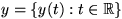
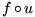

|
You are here : Control System Design - Index | Book Contents | Chapter 2 | Section 2.5 Introduction to the Principles of Feedback Control2.5 Prototype solution to the control problem via inversionOne particularly simple, yet insightful way of thinking about control problems is via inversion. To describe this idea we argue as follows:
In spite of the apparent naivity of this argument, its embellished ramifications play a profound role in control system design. In particular, most of the real world difficulties in control relate to the search for a strategy that captures the intent of the above inversion idea, whilst respecting a myriad of other considerations such as insensitivity to model errors, disturbances, measurement noise, etc. To be more specific, let us assume that the required behavior is specified by a scalar target signal, or reference r(t), for a particular process variable y(t). Say we also have available a single manipulated variable, u(t). We denote y by a function of time i.e. . We also use  to denote the operation of a nonlinear map an u to produce y. Let us also assume (for the sake of argument) that the output is related to the input a known functional relationship of the form:
where f is a transformation or mapping (possibly dynamic) which describes the input-output relations in the plant. (Note: We introduce this term here loosely and the reader can just think of it as describing some (input-output) relationship.) We recall a relationship of the type given in (2.5.1), a model. The control problem then requires us to find a way to generate u in such a way that y = r. In the spirit of inversion, a direct, although somewhat naive, approach to obtain a solution would thus be to set
from which we could derive a control law, by solving for u(t). This leads to
This idea is shown in Figure 2.7.
Figure 2.7: Conceptual Controller This is a conceptual solution to the problem. However a little thought indicates that the answer given in (2.5.1) presupposes certain stringent conditions. For example, inspection of equations (2.5.1) and (2.5.3) suggest the following requirements:
Of course, these are very demanding requirements. Thus, a significant part of Automatic Control theory deals with the issue of how to change the control architecture so that inversion is achieved but in a more robust fashion and so that the stringent requirements set out above can be relaxed. To illustrate the meaning of these requirements in practice, we briefly review a number of situations: Example 2.1 (Heat Exchanger) Consider the problem of a heat exchanger in which water is to be heated by steam having a fixed temperature. The plant output is the water temperature at the exchanger output and the manipulated variable is the air pressure (3 to 15 [psig]) driving a pneumatic valve which regulates the amount of steam feeding the exchanger. In the solution of the associated control problem, the following issues should be considered:
Example 2.2 (Flotation in Mineral Processing) In copper processing one crucial stage is the flotation process. In this process the mineral pulp (water and ground mineral) is continuously fed to a set of agitated containers where chemicals are added to separate (by flotation) the particles with high copper concentration. From a control point of view, the goal is to determine the appropriate addition of chemicals and the level of agitation to achieve maximal separation. Characteristics of this problem are:
One could imagine various other practical cases where one or more of the requirements listed above cannot be satisfied. Thus the only sensible way to proceed is to accept that there will inevitably be intrinsic limitations and to pursue the solution within those limitations. With this in mind, we will impose constraints which will allow us to solve the problem subject to the limitations which the physical set-up imposes. The most commonly used constraints are:
In summary, we may conclude
|